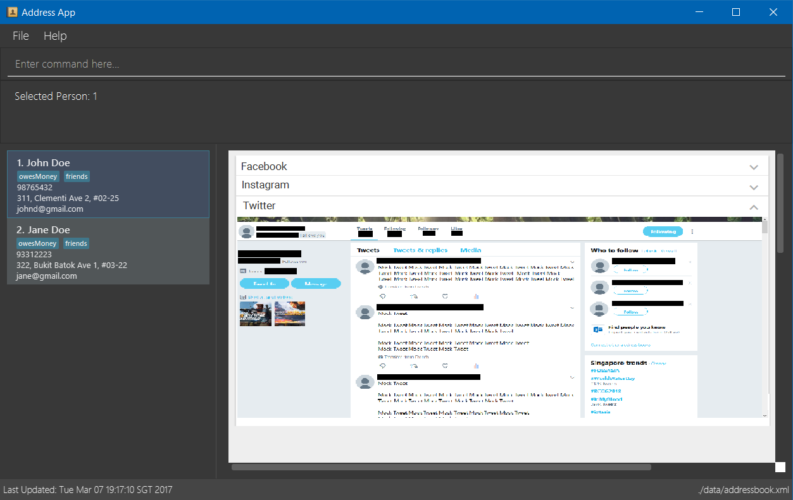

For All Your Social Media Needs
Media Socializer aims to provide you with one-stop access to your favourite social media platforms. It keeps track of the various platforms your friends are using and sends you straight to their page if you so desire. You can also store them as contacts in case you need to communicate with them offline. Check out the social feeds of different people on multiple platforms all in a single window!
Go on, grab the app and get started now!
Acknowledgements
-
Some parts of this sample application were inspired by the excellent Java FX tutorial by Marco Jakob.
-
The AddressBook-Level4 project was created by the SE-EDU initiative.
-
Libraries used: EasyBind, TextFX, ControlsFX, Jackson, Guava, JUnit4